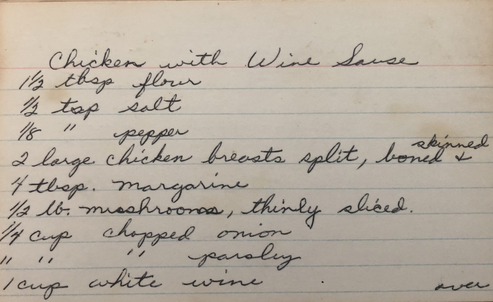
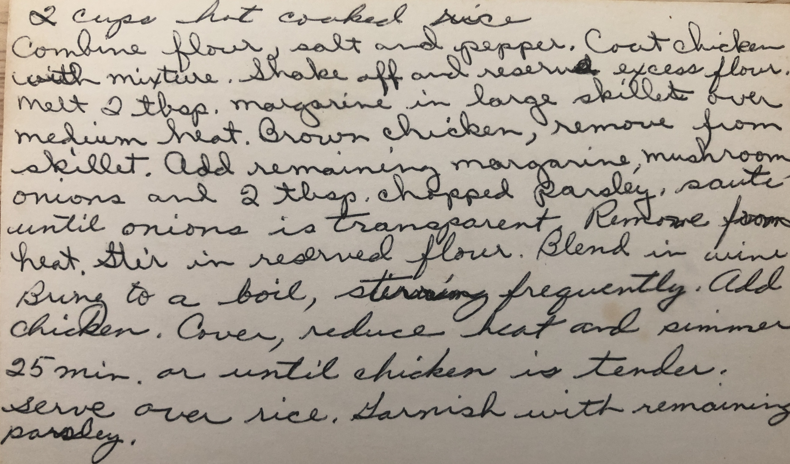

Polly's Chicken with Wine Sauce


Description
My grandma Polly used to make this chicken with white sauce recipe.
In addition to the white wine, the sauce contains mushrooms, onions, and parsley.
Ingredients:
- 1.5 tablespoons flour
- 0.5 teaspoon salt
- 1 pinch pepper
- 2 large chicken breasts, split, boned, and skinned
- 4 tablespoons margarine
- 0.5 pound mushrooms, thinly sliced
- 0.25 cup onions, chopped
- 0.25 cup parsley, chopped
- 1 cup white wine
- 2 cups hot cooked rice
Steps
- Combine flour, salt, and pepper.
- Coat chicken with mixture.
- Shake off and reserve excess flour.
- Melt 2 tablespoons margarine in large skillet over medium heat.
- Brown chicken, remove from skillet.
- Add remaining margarine, mushrooms, onions, and 2 tablespoons
chopped parsley, and saute until onions are transparent. Remove from heat.
- Stir in reserved flour.
- Blend in wine.
- Bring to a boil. Stirring frequently.
- Add chicken, cover, reduce heat, and simmer for 25 minutes, or
until chicken is tender.
- Serve over rice.
- Garnish with remaining parsley.